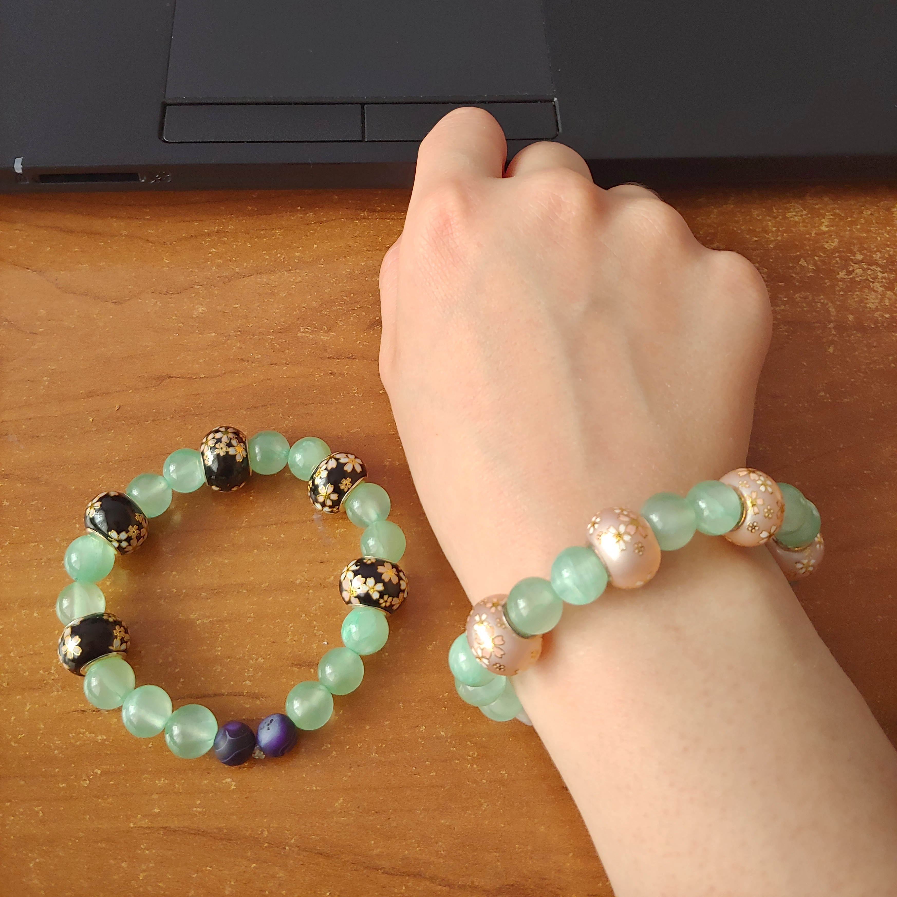
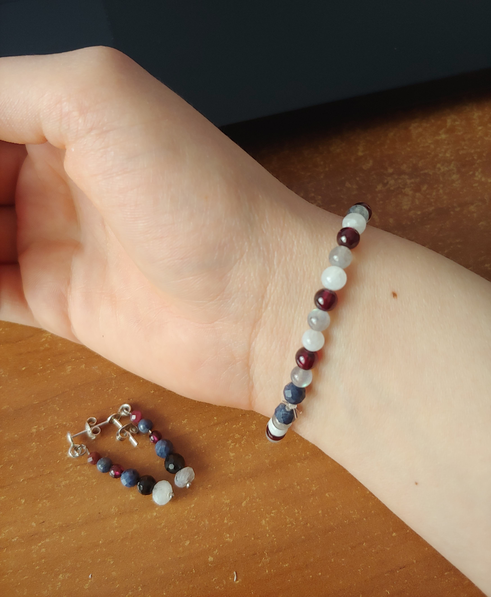
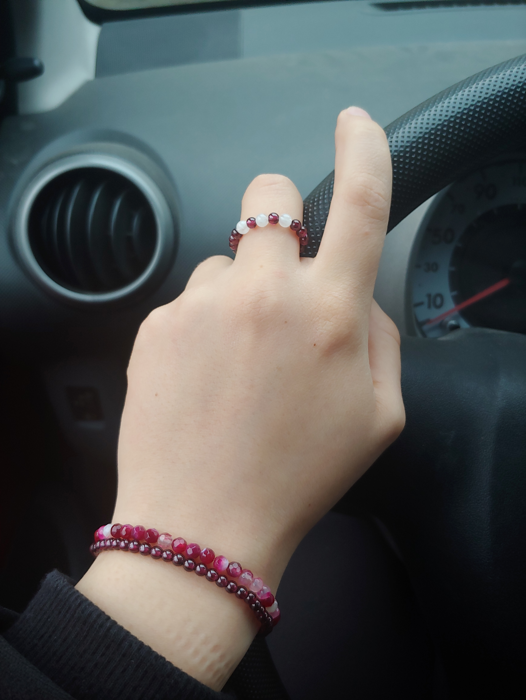

Moje piękności,
czyli własnoręcznie robiona biżuteria.
Żeby zobaczyć więcej moich prac, proszę udać się do mojego konta na DeviatArt'cie.
Troszkę optymizmu
Jesienna Słodycz
Tak jak początek historii Madame Red, zacznę od optymizmu w mojej bizuterii.
Wprawdzie Dziadek przyporządkowując mi porę roku zdecydowanie określa mnie jako wiosnę (a nawet "Wiosenkę") to jednak ja bardziej utożsamiam się z jesienią. Jesień jest pełna kolorów i bardzo zmienna. Przeważają wtedy brązy, czerwień, zieleń i inne kolory w stonowanych odcieniach. Są piękne i nie tak jaskrawe, idealne.
I właśnie tymi myślami wypełniona i kaprysem aby stowrzyć coś kolorowego, tj. wielobrawnego (nietypowego do niedawna dla mojej garderoby) z kamieni, które mi pozostały z pierwszych zakupów kamieni naturalnych, zrobiłam moją Jesienną Słodycz.

Jadeity
Będąc niedawno w Warszawie w sprawach rodzinnych natknęłam się zupełnie przypadkiem na elegancko zaopatrzony sklep stacjonarny z kamieniami naturalnymi i syntetycznymi oraz przeróżnymi elemantami do wyrobu biżuterii oraz drobnych ozdób. W ten sposób natknęłam się na jadeity. Okazało się, że mają podobną do agatów niesamowicie bogatą paletę kolorystyczną. Zachwyciło mnie to. I zdecydowałam się na kolor najbardziej zbliżony do naturalnego chińskiego jadeitu (ten zwykle jednak jest bardzo ciemny), czyli zielony. Aby coś do niego dopasować chwyciłam za koraliki z namalowanymi kwiatkami wiśni japońskiej, która jest tak urokliwa. Z jednego sznura powstały 2-ie bransoletki, a jeszcze zostało dość kul na inne piękne twory.
Spokój i determinacja
Oto jedno z najnowszych moich dzieł. Pierwsze śliczne kolczyki zrobione bez użycia gumki. Jedynie dogięłam odpowiednio drucik i oto są. :) Bardzo je lubię. Są też lekkie i wygodnie się je nosi. Kamienie mają kolejno (od dołu) przybliżone średnice:
- kamień księżycowy (fasetka): 6mm
- czarny minerał, którego nazwy nie pamiętam: 5mm
- szafir (fasetka): 5mm
- granat (kula): 4mm
- szafir (kula): 4mm
- rubin (fasetka): 3,5mm

Rozwinięciem tej kolekcji spokoju i opanowania jest bransoletka stworzona z tych samych kamieni, tj. kamienia księżycowego wykazującego opalizację, labradorytu wykazującego znacznie silniejszą opalizuję oraz nieodłącznego granatu.
Madame Red
Natępne moje dzieło to pięke, ale ciężkie kolczyki. Nie można w nich chodzić dłużej niż jakieś 3-5 godzin, ponieważ uszy zaczynają boleć i można nawet sobie krzywdę zrobić. Za to rodzice zupełnie się nie poznali, że to własnoręcznie robione kolczyki są, a nie kupne, co mi bardzo schlebia. :D Również dogięte (nie na gumce).
- Małe granaty mają średnicę ok. 5mm,
- zaś łezka z karneolu (krwawnika) ma dł. 3cm (30mm) i śr. (w najgrubszym miejscu) ok. 1cm (10mm).
Stworzenie tych kolczyków wywołało u mnie euforię, gdyż czekałam na znalezienie odpowiednich materiów, które dobrze by współgrały z karneolowymi łezkamim trwało ponad pół roku! Aż w końcu! Moje piękności powstały.

"Madame Red" jest też zasadniczo nazwą kolekcji, którą rozpoczęła potrzeba dopasowania czegoś do pransoletki, którą kupiła mi mama gdy byłyśmy w Zakopanem parę lat temu. Jest to bransoletka z różowych agatów. (To te jasniejsze kamienie.) Pierścionek był zrobiony prowizorycznie ze związanej gumki (jubilerskiej). I aktualnie już nie istnieje (ponieważ nie był zbyt wygodny ze względu na sposób wykonania) i czeka aż zbiorę motywację aby zrobić go popownie techniką doginania drucików. Z kolei bransoletka pod tą z agatów od mamy jest pierwszą (jeśli mnie pamięć nie myli) bransoletką, którą stworzyłam i dalej ją noszę w różnych aranżacjach. Jest to bransoletka z drobnych granatów.
Kolekcja jest częściowo zainspirowana postacią fikcyjną z anime i mangi pt. "Kuroshitsuji" (ang. "Black Butler", jap. 「黒執事」).
Nie będę się rozwodziła nad fabułą "Kuroshitsuji", ale chciałabym po krótce przedstawić postać Madame Red, która zapadła mi mocno w pamięć mimo, że dużo czasu już minęło odkąd poznałam tę historię.
Madame Red była (będę używała czasu przeszłego gdyż postać została uśmiercona w fabule) kobietą-lekarzem w XIX-wiecznej Anglii. Jej prawdziwa tożsamość to baronowa Angelina Dalles-Burnett. Swego czasu nazywana też Anne, wdowa po baronie Burnett'cie, siostra matki gł. bohatera i jego ciotka: Ciel'a Phantomhive. Chociaż jest postacią drugoplanową jest bardzo istotna, gdyż jest jedyną żyjącą (do czasu) rodziną gł. bohatera. A oto jej historia podzielona na pewne ramy czasowe bliżej nieokreślone:
- Jako bogata szlachcianka miała bardzo szczęśliwe dzieciństwo. Kochała bardzo rodzinę, a zwłaszcza zbliżoną wiekiem siostrę. Była jednak nieśmiała i wstydziła się swoich rudych włosów. Jej siostra była blondynką. Nie przepdała wtedy za kolorem czerwonym.
- Gdy siostry są na wydaniu hrabia Vincent Phantomhive (bardzo przystojny, przyznaję) przychodzi w zaloty i jedna z córek zostaje mu obiecana (wiadomo, koneksje rodzinne). Problem w tym, że obie się w młodzieńcu zakochują, a on choć miły dla obu to wybiera blond-włosą siostrę Angeliny. Wprawdzie dzięki jego komplementów Angelina wyzbywa się kompleksów odnośnie swego wyglądu. Na ten krótki moment uwielbia czerwień.
- Jednak gdy Vincent wybiera jej siostrę na przyszłą panią Phantomhive, kolor znów jej brzydnie. Niemniej postanawia się cieszyć szczęściem 2-ki najbliższych jej osób. Państu Phanthomhive rodzi się senek: Ciel. Tymczasem Angelinie przypada inny gentleman, z którym nienajgorzej jej się żyje, chociaz nie jest to już wielka miłość, którą żywiła do Vincent'a.
- Angelina bardzo sobie od zawsze ceniła rodzinę i stara się o dziecko z mężem, jednka ma problemy aby zajśc w ciążę. Wreszcie jej się udaje. Pewnego dnia jedzie dokądś z mężem (ciężarna) karetą i mają wypadek. Mąż chroni ukochaną i dziecko i ginie w wypadku. Jednak Angelina poroniła. Co gorsza, doktor, który ratował jej życie postanowił wyciąć jej część narządów rozrodczych w celu odratowania matki, która już poroniła. Gdy dochodzi do siebie w depresji po stracie męża i dziecka dowiaduje się, że jej ukochana siostra z swoim mężem zginęli w pożarze dworu. Nie ma wieści o dziecku. To czas kiedy szczerze już nienawidzi czerwieni, koloru, który towarzyszy jej całe życie i barwi jej etapy. W rozpaczy i nienawiści przybiera przydomek Madame Red, lecz dobra z natury wciąż stara się pomóc ludziom. Zostaje kobietą-lekarzem i szuka siostrzeńca.
- Pewnego dnia jej siostrzeniec pojawia się z nikąd cały i zdrowy, choć mocno zmieniony, naznaczony psychicznie, nieswój. Jest to jeden z niewielu przebłysków radości w jej życiu. Utrzymuje kontakt z młodzieńcem, lecz nie mieszkają razem.
- Jako kobieta-lekarz ma najróżniejszych pacjentów, ale większośc z nich to tacy, których nie stać na szanowanego mężczyznę-lekarza. Ponadto, ponieważ biedniejsze dzielnice roją się od prostytutek a antykoncepcja nie została jeszcze wymyślona/rozpowszechniona, zdecydowana większość pacjentek Madame Red zgłasza się do niej z prośbą o dokonanie aborcji. Madame Red-lekarka spełnia ich prośby z pełnym profesjonalizem, lecz nienawidzi ich z całego serca. Jak śmieją odrzucać dar rodzenia dzieci, który jej został odebrany! Wraz ze swym lokajem, którego prawdziwą tożsamością jest bóg śmierci shinigami, pod osłoną nocy dokonują morderstw owych pacjentek, które ośmieliły się namówić Madame Red do uśmiercenia płodu. Tak, to jest właśnie jedna z wersji możliwych rozwiązań kim tak naprawdę był Kuba Rozpruwarz (ang. Jack the Ripper).
- Dośc ironicznie, Madame Red ginie z rąd ostatniego członka swojej ukochanej rodziny, która zawsze była dla niej najdroższa. Wyrok wydaje Ciel Phantomhive, który przeżywszy własny horror zawarł pakt z potężnym demonem/diabłem i jako "wierny pies w służbie Jej Królewskiej Mości" usiłuje powstrzymać Kubę Rozpruwacza. Mimo szoku nie odstępuje od swej decyzji poznając jak bardzo skrzywdzona psychicznie i niepoczytalna jego ukochana cioteczka się stała.
- Na pogrzebie Madame Red jest ubrana w białą suknię. Ciel jest zgorszony tym kolorem. Żegnając się z cioteczką stwiersza, że biały kolor jej nie pasuje i wraz z czerwonymi różami narzuca na ciało w otwartej trumnie czerwoną suknię, w której cioteczka tak często chodziła.
 Oryginalny obraz tutaj.
Oryginalny obraz tutaj.
Ta historia jest dla mnie przestrogą by być mniej emocjonalną, gdyż gdy człowiek zbyt mocno się czymś przejmuje jest mu zbyt łatwo popaść w skrajość i siebie zatracić. Madame Red miała też swoje zalety. Starała się jak najlepiej myśleć i czuć dla bliskich, poszukiwała wiedzy i rozwiązań. Ciągle dążyła do samorozwoju. To bardzo ciekawa i tragiczna postać. Jej elegancja w stroju również bardzo do mnie przemawia.